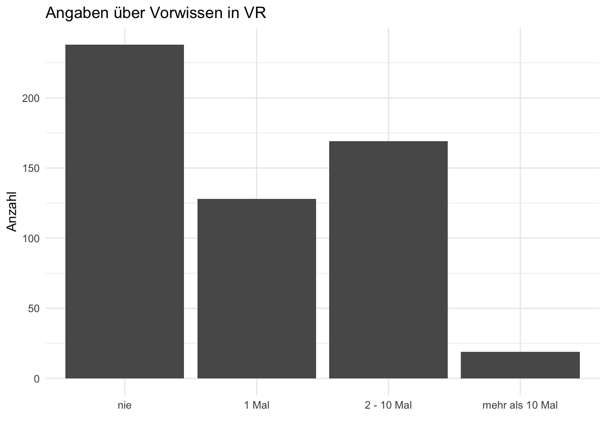
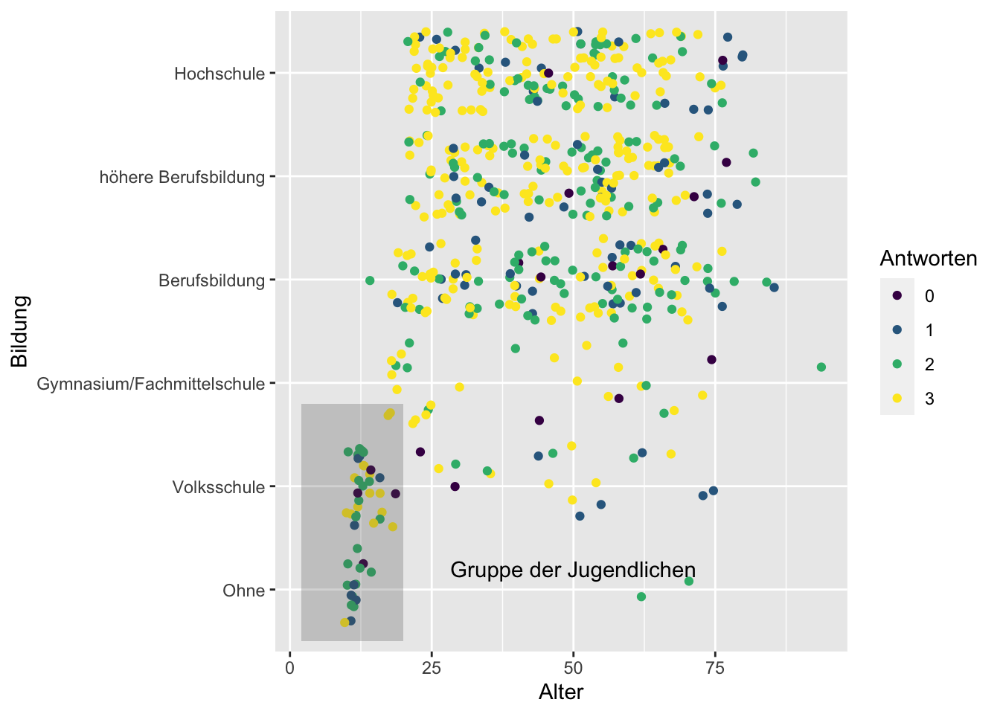
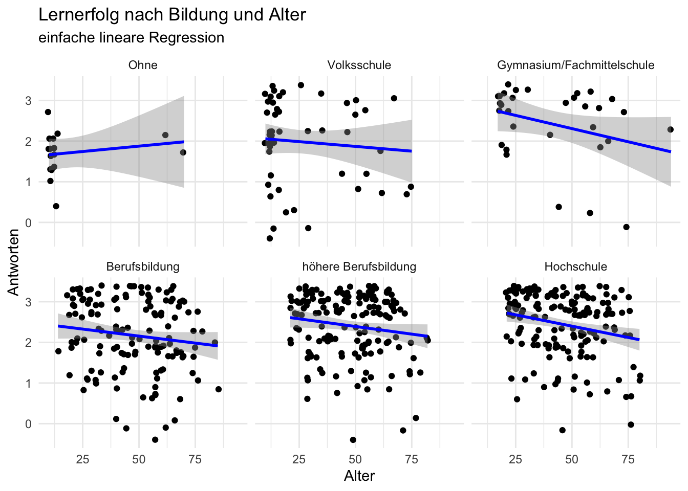

In diesem Datensatz haben bislang 554 Personen teilgennommen.
Alter
Die Angabe des Alters wurde in ganzen Jahren erfasst Abbildung 1
Code
# Calculate the count for each binbins <-cut(OLMA_Start$Alter, breaks =seq(min(OLMA_Start$Alter, na.rm =TRUE), max(OLMA_Start$Alter, na.rm =TRUE), by =10), include.lowest =TRUE)bin_counts <-as.numeric(table(bins))# Find the maximum height of the binsmax_count <-max(bin_counts)# First, calculate the mean and median outside of the ggplot2 callsalter_mean <-mean(OLMA_Start$Alter, na.rm =TRUE)alter_median <-median(OLMA_Start$Alter, na.rm =TRUE)OLMA_Start %>%ggplot() +geom_histogram(aes(Alter), binwidth =5) +geom_vline(aes(xintercept = alter_mean), color ="red", linetype ="dashed") +geom_vline(aes(xintercept = alter_median), color ="red", linetype ="dashed")+geom_text(aes(x = alter_mean, y = max_count, label =sprintf("Mw")),color ="black", check_overlap =TRUE, hjust=-0.2) +geom_text(aes(x = alter_median, y = max_count, label =sprintf("M")),color ="black", check_overlap =TRUE, hjust=-0.2)+labs(title ="Altersverteilung",subtitle ="mit Mittelwert (Mw) und Median (M)",caption =paste(sprintf("Mittelwert: %.2f;", alter_mean), sprintf("Median: %.2f", alter_median)) )+ylab("Anzahl")+theme_minimal()
Abbildung 1: Verteilung der Altersangaben
Bildungsabschluss
Die erreichten Bildungsabschlüsse verteilen sich wie in Tabelle 1 dargestellt.
Das Vorwissen umfasst die Häufigkeit mit welcher die Personen bereits Erfahrungen mit VR Endgeräten gesammelt haben (vgl. Abbildung 2). Bei vorhandenen Erfahrungen wurde weiter erfragt woher diese stammen (vgl Tabelle 2)
Code
OLMA_Start %>%mutate(VoWi_Count = haven::as_factor(VoWi_Count)) %>%select(VoWi_Count) %>%ggplot() +geom_bar(aes(VoWi_Count))+labs(title ="Angaben über Vorwissen in VR" )+ylab("Anzahl")+xlab("")+theme_minimal()

Abbildung 2: Angaben über die Benutzungshäufigkeit von VR Devices
Anwendung der VR Technologie
Menschen, die bereits einige Vorerfahrung mit VR angaben, wurden gebeten, das Anwendungsfeld zu bezeichnen. Die folgende Tabelle zeigt nur Mehrfachnennungen.
Code
OLMA_Start %>%select(starts_with("VoWi")) %>%filter(VoWi_Anlass !=-99, VoWi_Count !=1) %>%mutate(Aussage=str_to_lower(VoWi_Anlass),Kategorie=haven::as_factor(VoWi_Count)) %>%group_by(Kategorie, Aussage) %>%# Group by both category and wordtally() %>%# Count occurrencesarrange(Kategorie, desc(n)) %>%filter(n>1) %>%gt() %>%tab_style(style =list(cell_fill(color ="bisque"),cell_text(weight ="bold")),locations =cells_row_groups(groups =c(1,2)) ) %>%cols_width(everything() ~pct(50) ) |>cols_align(align ="center",columns = n ) %>%cols_align(align ="auto",columns = Aussage )
Aussage
n
1 Mal
olma
14
freizeit
4
ausstellung
3
ausprobieren
2
europapark
2
hier an der olma
2
kino
2
messe
2
spass
2
2 - 10 Mal
freizeit
9
arbeit
4
gaming
4
messe
4
an messen
3
ausstellungen
3
gamen
3
messen
3
europapark
2
im verkehrshaus
2
olma
2
schule
2
spiel
2
spiele
2
weiterbildung
2
Tabelle 2:
Nennungen der Anwendungsorte
Skalenüberischt
Die Angst oder Furcht vor Computern wurde mit der Computer Anxiety Scale1 erfasst.
In Abhängigkeit von Alter und Bildungsstufe ergibt sich folgendes Bild:
Code
OLMA_Ready %>%ggplot(aes(x=Alter, y=Bildung, color=Antworten))+geom_point(position ="jitter")+annotate('rect',ymax=2.8,xmin=2,ymin=0.5,xmax =20,alpha=0.25 )+annotate('text',x=50,y=1.2,label="Gruppe der Jugendlichen")

Code
OLMA_Ready %>%ggplot(aes(x=Alter, y=Antworten))+geom_point(position ="jitter")+geom_smooth(aes(group=1), method ='lm', color="blue")+facet_wrap(~Bildung)+theme_minimal()+labs(title ="Lernerfolg nach Bildung und Alter",subtitle ="einfache lineare Regression" )

Fußnoten
The degree of “an individual’s apprehension, or even fear, when she/he is faced with the possibility of using computers” [@venkateshDeterminantsPerceivedEase2000, p.349]↩︎